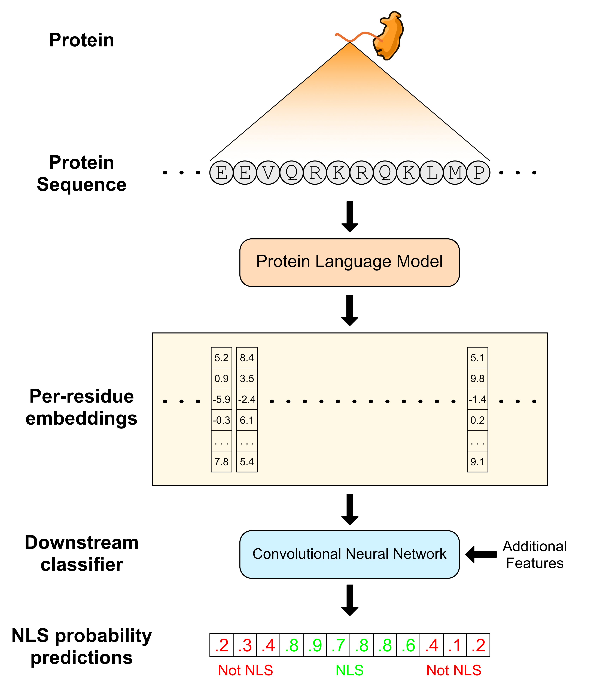

About pLM-NLS
pLM-NLS is a predictor of nuclear localization signals (NLS). Given an amino acid sequence, pLM-NLS leverages protein language models (pLM) to produce embeddings: latent space representations of each residue that can capture various structural, functional, and other properties. These embeddings account for interactions between residues, including both short-range and long-range interactions, making them particularly suitable for NLS prediction. pLM-NLS then utilizes a convolutional neural network (CNN) trained on these embeddings in order to output the final NLS probability predictions for each residue. A predicted probability threshold of 0.5 is used to convert these probabilities to binary (Yes/No) predictions. The figure below illustrates the overall workflow used by the model:

Prediction Tool
Input a single amino acid residue sequence

Number of sequences inputted into the text box must be less than twenty

Processing sequences...

Success! Scroll down to see results